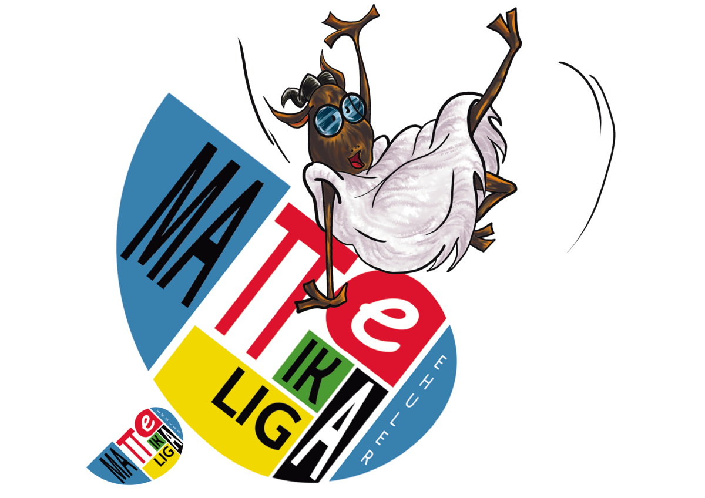

Partida bakoitzak 90 minutu irauten du eta hiru problema matematiko ebaztean datza. Bi taldeek problemak aldi berean jasotzen dituzte, gaztelaniaz eta euskaraz.

Soluzio bakoitzak 0tik 5era bitarteko puntuazio osoa jasotzen du. Guztiz okerra den soluzioak 0 puntu jasotzen ditu eta guztiz zuzena denak, 5. Tarteko kasuetan, planteamenduaren aurrerapena eta soluzio zuzenarekiko hurbiltasuna baloratzen dira.
| Partida-puntuak | Emaitza |
|---|---|
| 3 puntu | Garaipena |
| 1 puntu | Berdinketa |
| 0 puntu | Porrota |
Problema-puntu gehien lortu dituen taldeak irabazten du partida. Bi taldeek puntuazio bera lortzen badute, partida berdinketan amaitzen da.
Puntuazioak jardunaldiko partidak amaitu eta gehienez 72 orduko epean argitaratzen dira.
Talde bakoitzak bere soluzioen zuzenketa xehatua jasotzen du: egindako akatsak, puntu-kenkarien arrazoiak eta soluzio zuzenera iristeko balizko bidea.
Ordezkariak erreklamazioak ligainstitutos@ehuler.eus helbidera bidal ditzake, aktak argitaratu eta gehienez 72 orduko epean.
Astebeteko epean ebatzia. Epaile Batzordeak erreklamazioa ebazten du eta erabakia eragindako taldeei jakinarazten die, erreklamazioa jaso eta gehienez astebeteko epean. Eragindako taldeek errekurtsoa aurkezteko eskubidea dute, epe berberetan. Ebazpenak partidaren emaitza aldatzen badu, emaitza berria lehiaketaren ondorio guztietarako aplikatzen da.
Hezkuntza-laguntzako berariazko premiak dituzten jokalarientzat, ebazpen-denbora gehienez 10 minutu luzatu ahal izango da. Luzapena partidaren hasiera orokorraren aurretik ematen da: eskubidea dutenek gainerako parte-hartzaileek baino gehienez 10 minutu lehenago jasotzen dituzte problemak.
Pertsona horiek partidako jokalari izan behar dute eta problemak isilpean gorde behar dituzte gainerako parte-hartzaileei ofizialki eman arte.
Eskatzeko, idatzi ligainstitutos@ehuler.eus helbidera, egoera egiaztatzen duen ziurtagiria erantsita. Antolakuntzaren berariazko baieztapena jaso ondoren soilik balia daiteke.
Jardunaldi bakoitzaren aurretik jakinarazten da kalkulagailuak edo bestelako laguntza-materialak erabiltzea baimenduta dagoen. Proposatutako problemen erantzunak zuzenean ematen dituzten baliabideak debekatuta daude eta, bereziki, adimen artifizialeko sistemak.
Talde bakoitzak adostutako orduan aurkeztu behar du. Talde bat aurkezten ez bada, partida galdutzat ematen zaio: bertaratu den taldeak 3 puntu jasotzen ditu eta bertaratu ez denak, 0. Bat ere aurkezten ez bada, biek 0 puntu jasotzen dituzte.
Kontsultatu oinarri osoak edo idatzi iezaguzu eta lagunduko dizugu.